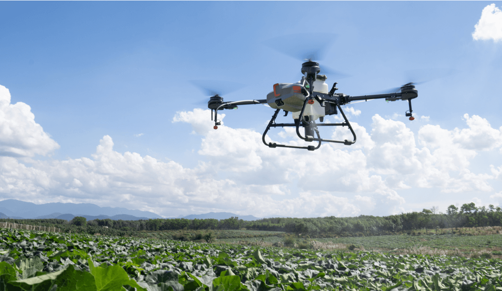

Development of UAV-Based Real-Time Plant Disease Detection Mechanism
Developed by JRF Saurabh Nirala Pandey, Jaypee Institute of Information Technology (JIIT) under the guidance of Dr. Gaurav Verma and Prof. Richa Gupta.

Welcome to the UAV-Based Real-Time Plant Disease Detection Mechanism Website! 🌿🔍
Our mission is to help in identifying plant diseases efficiently. Upload an image of a plant, and our system will analyze it to detect any signs of diseases. Together, let's protect our crops and ensure a healthier harvest!
How It Works
- Upload Image: Go to the Disease Recognition page and upload an image of a plant with suspected diseases.
- Analysis: Our system processes the image using advanced algorithms to identify potential diseases.
- Results: View the results and recommendations for further action.
Why Choose Us?
- Accuracy: Our system utilizes state-of-the-art machine learning techniques for accurate disease detection.
- User-Friendly: Simple and intuitive interface for seamless user experience.
- Fast and Efficient: Receive results in seconds, allowing for quick decision-making.
Precision: 97%
Recall: 95%
F1 Score: 96%